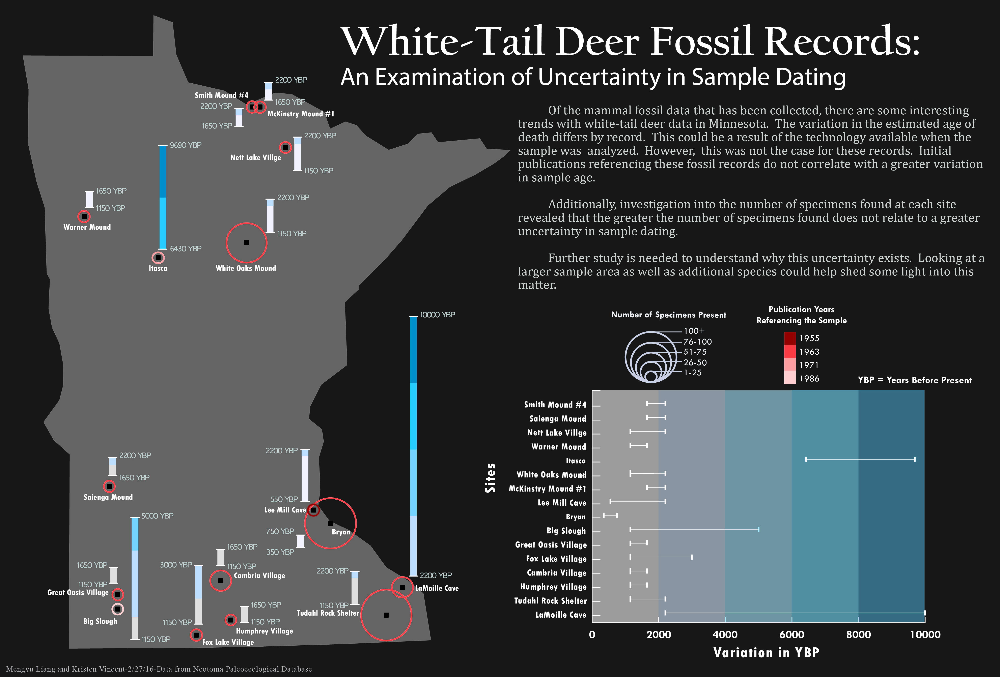

§ 2016 UW-Madison Cartography Lab Design Challenge

After the challenging day-long Design Challenge organized by the UW-Madison Cartography Lab, along with my colleague Kristen Vincent, we created this visualization to facilitate communication of trends in multidimensional spatio-temporal data. This infographic provides a new perspective to understand the uncertainties in fossil record dating. Instead of simply representing the uncertainties of white-tail deer fossil record dating at each site, we used color and symbol size to explore the potential factors that could contribute to the uncertainties in dating fossils. Our conclusion is that, from looking at one state, greater variance in dating is not related to the amount of specimens found or the year of publication. However, we could not eliminate these factors just yet; we would need to look at other species and a larger spatial extent to draw a firm conclusion.